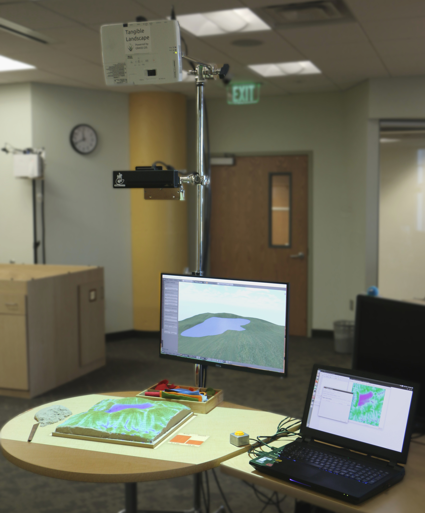
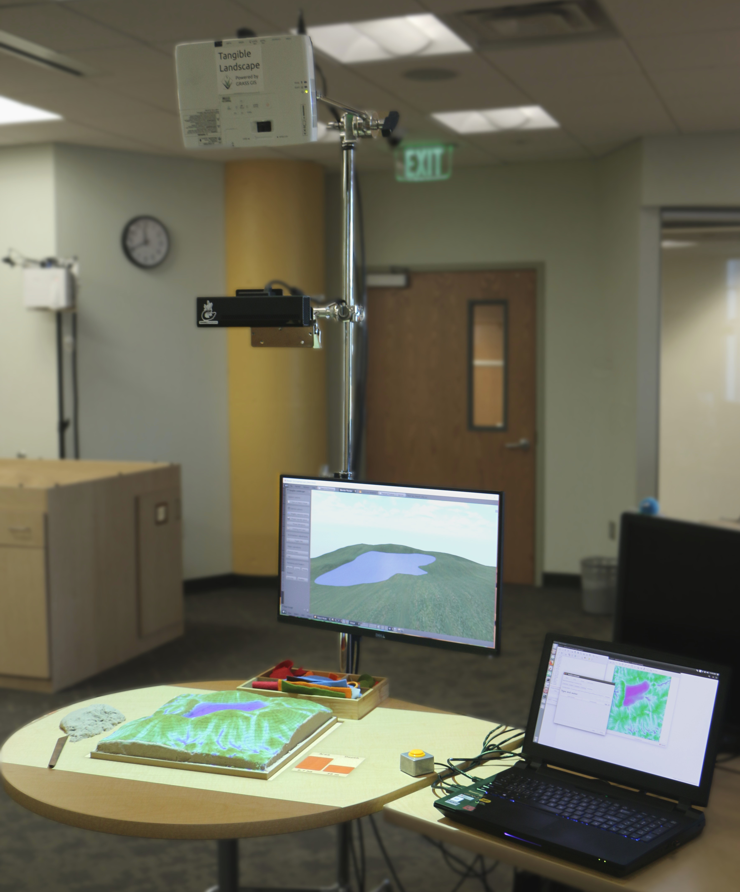

GFDRR Webinar
Tangible Landscape
as a tool for modeling and science communication
Helena Mitasova, Anna Petrasova, Brendan Harmon, Vaclav Petras, Payam Tabrizian, Ross Meentemeyer

North Carolina State University
The webinar is presented by the GeoForAll Laboratory at the Center for Geospatial Analytics (CGA), North Carolina State University
CGA is an interdisciplinary research and education center with focus on geospatial computing, modeling, analytics and geovisualization.
We offer MGIST professional master's degree (on-line and on-campus) and a new PhD in Geospatial Analytics launched in Fall 2018
Authors
 |
Helena Mitasova Associate Director of Geovisualization |
 |
Anna Petrasova Postdoc at CGA |
 |
Brendan Harmon Assistant Professor |
 |
Vaclav Petras Postdoc at CGA |
 |
Payam Tabrizian PhD student |
 |
Ross Meentemeyer CGA Director |
Motivation for Tangible Interfaces for GIS
- Interaction through mouse, keyboard and display does not encourage creativity.
- Manipulating computer models is not intuitive and requires specialized software and training.
- Collaboration is restricted as typically only one user at a time can navigate and modify models.


The evolution of tangible geospatial interfaces


Image source:
MIT Media Lab,
http://idav.ucdavis.edu/
Illuminating Clay, Tangible Geospatial Modeling System (TanGeoMS), Augmented Reality Sandbox
Ishii H., Ratti C., Piper B., Wang Y., Biderman A. and Ben-Joseph E.
"Bringing clay and sand into digital design—continuous tangible user interfaces." BT technology journal 22.4 (2004): 287-299.
L. Tateosian, H. Mitasova, B. A. Harmon, B. Fogleman, K. Weaver, and R. S. Harmon,
“TanGeoMS: Tangible Geospatial Modeling System,”
IEEE Trans. Vis. Comput. Graph., vol. 16, no. 6, pp. 1605–12, 2010.
Tangible Landscape: real-time coupling with GIS

Tangible Landscape couples a digital and a physical model through a continuous cycle of 3D scanning, geospatial modeling, and projection.
Tangible interactions

Applications: topographic analysis
slope |
erosion |
landforms | |
Applications: visibility
Visibility and line of sight
Applications: solar analysis


Solar irradiation and cast shadows
Applications: trail planning


Optimized trail routing between waypoints based on energetics, topography, and cost maps with feedback including trail slopes and viewsheds
Applications: 3D soil moisture exploration


Application: erosion control
Sculpting a check dam to retain storm water and reduce erosion


Application: erosion control
Placing colored felt to modify land cover.
Adding grass (light green) and patches of trees (darker green)
changes the c-factor thus reducing erosion.

Applications: Dam break
Applications: wildfire spread
Management of emerging infectious disease through participatory modeling
- Sudden Oak Death (SOD) case study
- tree disease in California and Oregon
- simulating disease using spatially-explicit model
- workshop with expert stakeholders

Applications: urban growth
Simulation of urban growth scenarios with FUTURES model


Meentemeyer, et al. (2013), FUTURES: multilevel simulations of emerging urban–rural landscape structure using a stochastic patch-growing algorithm.
Applications: urban growth
Serious games: coastal flooding


Save houses from coastal flooding by building coastal defenses
Structured problem-solving with rules, challenging objectives, and scoring
Serious games: Termite infestation


Manage the spread of termites across a city by treating city blocks using a model of biological invasion in R
Realtime 3D rendering with Blender


Designing with Tangible Landscape
Dorothea Dix park case study:
changing landforms and hydrology


Exploring views from the park entrances

Planting trees and siting a shelter

Designing a trail and exploring views

Evaluation of design scenarios

System setup
projector, scanner, stand, computer, model, table, screen
 

Total budget: $3000
Software architecture

Building physical 3D models

Hand sculpting from polymeric sand

Hand sculpting with difference feedback
blue → add sand, red → remove sand3D printing

CNC routing large complex models and molds

Casting polymeric sand


Tangible Landscape for designers
Intuitive, collaborative environment for landscape design augmented with geospatial analyses.


Tangible Landscape for education
Method to improve understanding of geospatial algorithms, processes and interactions.


Tangible Landscape for communities
Platform for decision-making and science communication where people of different backgrounds can interact.


Making geospatial data and tools accessible to all
Tangible Landscape for researchers and developers
Tool for rapid generation of test data for development and evaluation of geospatial algorithms.

Creating test DEMs for landscape evolution analysis
Open source
Tangible Landscape plugin for GRASS GIS
github.com/tangible-landscape/grass-tangible-landscape
GRASS GIS module for importing data from Kinect v2
github.com/tangible-landscape/r.in.kinect
Tangible Landscape repository on Open Science Framework
osf.io/w8nr6
Resources
- Tangible Landscape website: tangible-landscape.github.io
- Tangible Landscape wiki:
github.com/tangible-landscape/grass-tangible-landscape/wiki - Book: Tangible Modeling with Open Source GIS, second edition